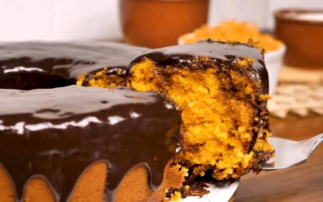

Bolo de cenoura

| Preparo |
Dificuldade |
Porções |
| 45min |
Fácil |
12 pedaços |
INGREDIENTES
- 3 cenouras médias raladas
- ½ xícara (chá) de óleo
- 4 ovos
- 2 xícaras (chá) de açúcar
- 2½ xícaras (chá) de farinha de trigo
- 1 colher (sopa) de fermento em pó
COBERTURA
- 1 colher de (sopa) de manteiga
- 3 colheres (sopa) de chocolate em pó
- 1 xícara (cha) de açucar
- 1 xícara (cha) leite
MODO DE PREPARO
MASSA
- Em um liquidificador, adicione a cenoura,os ovos e o óleo, depois misture.
- Acrescente o açúcar e bata novamente por 5 minutos
- em uma tigela ou na batedeira, adione a farinha de trigo e depois misture novamente.
- Acrescente o fermento e misture lentamente com uma colher.
- Asse em um forno preaquecido a 180º C por aproxidamente 40 minutos.
COBERTURA
- Despeje em uma tigela a manteiga, o chocolate em pó, o açúcar e o leite, depois misture.
- Leve a mistura ao fogo e continue misturando até obter uma consistência cremosa, depois despeje a calda por cima do bolo.
Receita original